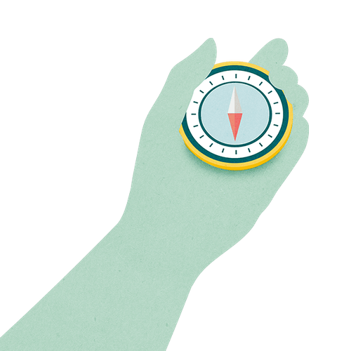

Mit der Academy erhaltet ihr im Business-Plan praxisnahe Lernmodule rund um Facilitation und wirksame Transformation.
Gemeinsam mit 9 Spaces zeigt Plan International Deutschland, wie wertebasiertes Arbeiten Orientierung gibt – nach innen wie nach außen.

Purpose, Vision, Strategie, Ziele, Taktiken, Mission. Wer soll da den Überblick behalten? Eine Abgrenzung.
Eine spielerische Methode, um mit beliebig großen Gruppen nach dem Sinn zu suchen
Finde deinen persönlichen Purpose in einer gut investierten Stunde.
Visionsarbeit ist Teamarbeit! Dieses Tool hilft euch dabei, die Vergangenheit zu reviewen, um von dort aus in die Zukunft zu schauen.